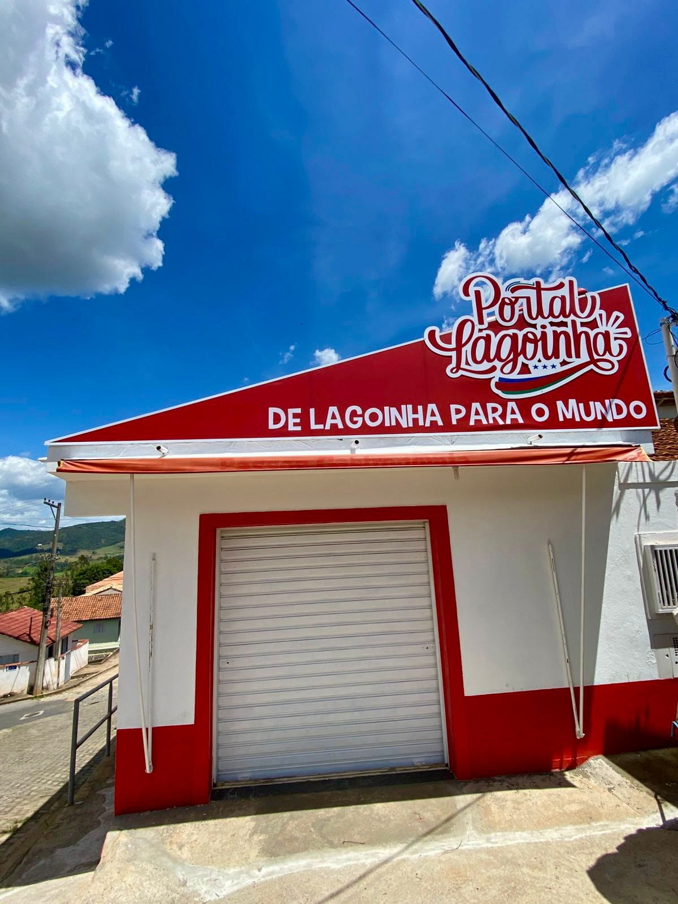

O Escritório e Agência do Portal Lagoinha está estrategicamente localizado na Praça Benedito Afonso de Campos, número 05, no coração do Centro de Lagoinha, São Paulo. Este local centralizado facilita o acesso tanto para os moradores locais quanto para visitantes que desejam conhecer mais sobre a cidade e seus eventos.
O escritório serve como a base operacional do Portal Lagoinha, onde nossa equipe dedicada trabalha para coletar, organizar e divulgar informações relevantes sobre a cidade e o vale do paraiba. É aqui que planejamos nossas estratégias de comunicação, coordenamos eventos e colaboramos com parceiros locais para promover o desenvolvimento da comunidade.
A agência também atua como um ponto de contato para empresas e organizações que desejam anunciar seus produtos e serviços no portal. Oferecemos soluções personalizadas de marketing digital para ajudar nossos parceiros a alcançar seu público-alvo de maneira eficaz.
Além disso, o escritório é um espaço aberto para a comunidade. Incentivamos os moradores a visitarem-nos para compartilhar suas histórias, eventos e sugestões. Estamos sempre dispostos a ouvir e colaborar com aqueles que desejam contribuir para o crescimento e fortalecimento de Lagoinha.
Nosso trabalho é desenvolvimento com carinho e empatia com você cidadão!
O Portal Lagoinha transcende a definição convencional de um veículo de comunicação; é um organismo vivo, nutrido pela paixão e dedicação de cada membro de nossa equipe e, fundamentalmente, pela colaboração da nossa comunidade. Acreditamos que a abrangência e a qualidade de nossos serviços residem não apenas no profissionalismo técnico, mas no genuíno amor ao próximo e no compromisso inabalável com o bem‑estar de nossa cidade e região.
Participação Ativa: Cobrimos e nos engajamos em eventos locais, reuniões estratégicas e diversas atividades comunitárias.
Fortalecimento de Laços: Buscamos incessantemente fortalecer os vínculos entre os moradores, cultivando um ambiente propício à colaboração e ao crescimento mútuo.
Disponibilidade Integral: Nosso compromisso com a população é contínuo — com disponibilidade de serviço de segunda a segunda — garantindo que a informação e o apoio nunca cessem.
É, para todos nós, um imenso privilégio servir à comunidade da Lagoinha. Reiteramos nosso compromisso com a excelência, sempre pautados pela ética, transparência e, acima de tudo, pela dedicação ao nosso público. Juntos, construímos uma comunidade mais forte e conectada.